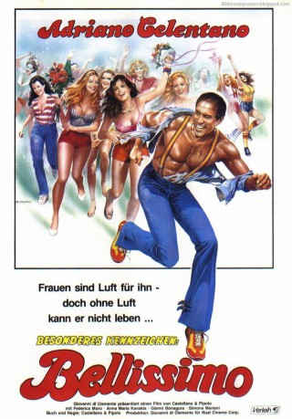

#9062 Besondere Kennzeichen: Bellissimo
 
 IMDB-Wertung: 5.9 / 10
IMDB-Wertung: 5.9 / 10  Metascore: 0
Metascore: 0 
Mattia ist Erfolgsschriftsteller im besten Alter. Rauh aber unwiderstehlich ist sein Charme. Er ist einfach BELLISSIMO...... der Schönste! Reihenweise pflückt er die Rosen, die am Wege stehen. Aber Rosen haben auch Dornen. Gefahren lauem überall: eifersüchtige Ehemänner.....
Jahr: 1983
Dauer: 87 Minuten
FSK: 6
Land: Italien Studio: Edel Media & EntertainmentTonspuren:
Untertitel:
Auflösung: 1080p (1920x1072) Größe: 5519 MB
Genre: Komödie
Regisseur: Franco Castellano, Giuseppe Moccia
Drehbuch: Franco Castellano
Soundtrack: Gino Santercole
Darsteller:
 Adriano Celentano als Mattia
Adriano Celentano als Mattia- Anna Kanakis als Rosalia
- Jimmy il Fenomeno als D.J.
- Federica Moro als Michela
- Gianni Bonagura als
- Simona Mariani als
- Tiberio Murgia als
- Kathleen Quaye als
- Giacomo Rosselli als
- Michela Albanese als
- Antonella Robustelli als
- Caren Lindsay Peyton als
- Silvio Spaccesi als
- Alfred Thomas als
- Annette Meriweather als Gloria from Time Magazine
- Elena Mazza als
- Patricia Revelli als
- Orietta Ferri als
- Susan Carlburg als
- Rossella Gardini als
- Vincenzo De Toma als
- Nicola De Buono als
- Santo Celso als
- Pierluigi Pelitti als
- Andrea Montuschi als
- Silvia Cohen als
- Raffaele di Sipio als Uomo con la parrucca (uncredited)
- Alfio Patané als Cuoco (uncredited)
Datei: X:\1983\Besondere Kennzeichen Bellissimo (1983, FSK6, 1920x1072).mkv seit 19.07.2018
Festplatte: HD 1980-1986
 Es gibt insgesamt 35 Filme in der Gruppe '1983'
Es gibt insgesamt 35 Filme in der Gruppe '1983'